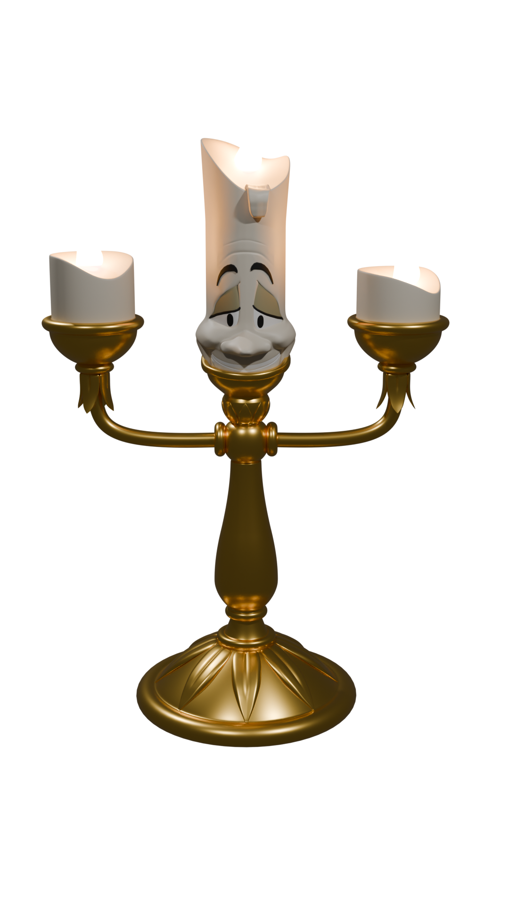
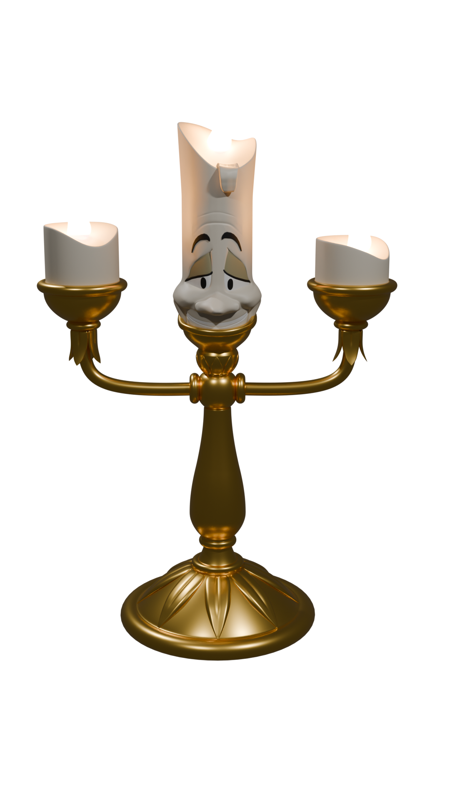

Voici tous mes projets les plus aboutis, ceux que j'apprécie particulièrement:
Des projets réalisés dans mon ancienne école, de l'animation 3D, du montage vidéo, et bien d'autres.
Des projets réalisés dans mon ancienne école, de l'animation 3D, du montage vidéo, et bien d'autres.


 


This is the homepage of your website.